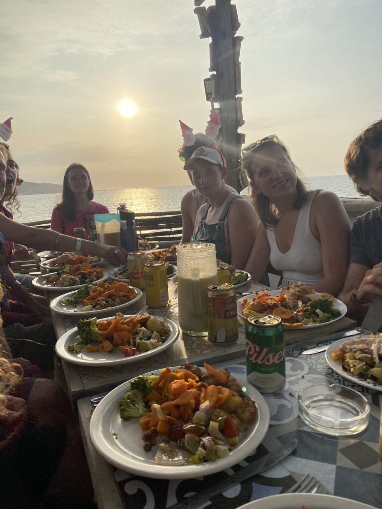

Aangekomen, geland en thuisgekomen op het noordelijke surfstrand van Máncora blijkt het contrast met Zuid-Peru enorm. De noodtoestand, avondklok en gewelddadige protesten zijn verleden tijd. Elke handeling kost me nog moeite, maar er is geen betere plek om op wacht te staan dan in dit warme bad.
Overal is zand. Een ontwikkeld ochtendritueel kan niet beginnen zonder het uitschudden van mijn kussen en het reinigen van mijn haar, wimpers en wenkbrauwen. Waarom ligt het halve strand in mijn bed, ik had gister toch gedoucht? Of misschien ook niet, de behoefte om dat bij te houden kent een historisch dieptepunt. De tijd staat stil in de zin dat de uren vervagen en de dagen verstrijken zonder een briesje onzekerheid. Elke dag komt de zon op, groeien de golven tot monsters, stijgt de temperatuur tot 28 graden, gaat het naburige feesthostel los en baddert de heer Pfeiffer tevreden in mijn bloedbaan.
De rust is (voorlopig) wekergekeerd in Peru. De demonstranten nemen kerstvakantie, maar willen naar verluidt het nieuwe jaar knallend ingaan. Na vier heerlijke dagen met beste vriendjes Luc en Iris, vertrekken zij naar Ecuador. De gretigheid (en druk) om aan te sluiten neemt bij mij des te meer toe, maar ondertussen geef ik me ook volledig aan het lot over. Waar ik eerst nog bijna omviel tijdens een wandeling, daag ik nu elke dag mijn lichaam uit met work-outs, wandelingen en stoeipartijen met de golven. Elke dag loop ik via het strand naar de beste surfbreaks van het tranquilo dorpje. Smachtend kijk ik naar de (pro-) surfers in het water waar ik ook tussen wil liggen. In plaats daarvan zak ik neer op het zachte zand, tussen alle vrouwen die verlekkerd naar hun golfovermeesterende mannen kijken.
Toch kan ik me niet vervelen. Ik dood de tijd niet, ik gijzel hem. Het verdwijnt in een potje in de koelkast die ik hopelijk vergeet mee te nemen. Het hostel van bamboe en hout doet zich voor als een grote boomhut met een zwembad en een strandopgang. Ik lees zes boeken tegelijk en tel de bladzijdes niet meer. Ik lig in de zon tot mijn ingewanden bruin kleuren, terwijl de aangespoelde zeehonden en schildpadden me begroeten met een sterke walm. Ik studeer Spaans wanneer de motivatie het toestaat en slaap gaten in de dag. ‘s Avonds kijk ik glazig naar de verbrande koppies van mijn medereizigers, speel ik potjes schaak met locals of filosofeer ik met twee oude hippies over Duitse schrijvers en ayahuasca.

Een enkele keer verlies ik mijn geduld en laat ik me gaan. Een Engelse jongen staat al twee dagen verwoed in de provisorische keuken voor zijn traditionele kerstdiner en hij heeft een aardig leger aan backpackers verzameld om het op te peuzelen. De drank vloeit rijkelijk terwijl de nacht voorbijstrijkt en eindigt met een ochtendduik in de niet zo stille oceaan. Het ontnuchterende, koude water doet me beseffen dat mijn herstel een flinke klap krijgt.
Er zijn nu zes weken niet geheel zoals gewenst verlopen, maar ik leer meer en meer over mezelf en heb ook nog de tijd om dat te reflecteren. De mensen die voorbij scheren in een vliegtuig zien een zeemeeuw geduldig zweven en soms een visje uit de zee pikken. Storm de Seagull.